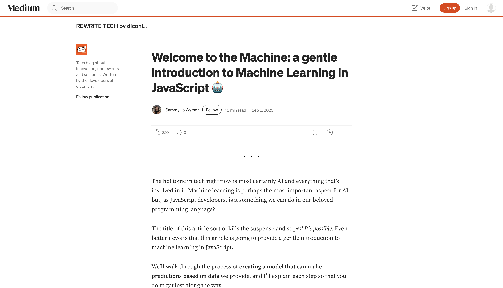

Introduction

The hot topic in tech right now is most certainly AI and everything that’s involved in it. Machine learning is perhaps the most important aspect for AI but, as JavaScript developers, is it something we can do in our beloved programming language?
The title of this article sort of kills the suspense and so yes! It’s possible! Even better news is that this article is going to provide a gentle introduction to machine learning in JavaScript.
We’ll walk through the process of creating a model that can make predictions based on data we provide, and I’ll explain each step so that you don’t get lost along the way.
It’s a gentle introduction, so the aim is to help you understand how you can implement machine learning in JavaScript without going too deep into the machine learning abyss.
https://medium.com/rewrite-tech/welcome-to-the-machine-a-gentle-introduction-to-machine-learning-in-javascript-9906a46f0450
Setting Up Your Project
We’re going to start from absolute scratch, so what you’ll need to do is create a folder and give it a name. Mine is called machine-learning-beginners. Open this folder in your code editor of choice — I will be using VS Code — open the terminal and make sure you are in the correct folder.
Initial Steps
We then need to run npm init to create a Node.js project. Once you run this command in your terminal you will be prompted to add some information about the project. I’m going to be super lazy and I’m just going to leave it empty for now (you can either add the info now or later but it’s not too important for the demo):
npm init
We then need to install TensorFlow.js:
bash
Copy
npm install @tensorflow/tfjsFinally, create an index.js file and import TensorFlow.js:
// index.js
// Use CommonJS require syntax to import TensorFlow.js
const tf = require("@tensorflow/tfjs");Setup done! Now, we can start writing some machine learning code!
Creating a Prediction Model in JavaScript
First it’s probably good to outline what our model should do:
If you’ve read my previous articles, you might know that I’m a huge football (the round one) fan, and so we are going to create a model that predicts the result of a football match based on the previous results between two teams.
Training Data
Now we can get started on the code.
The most important part of machine learning is data, and so we need to provide our model with data to train it. The data we are going to provide is the last 20 results between Liverpool FC and Everton FC. The focus will be on Liverpool and so they will always be the first input:
// index.js
const tf = require("@tensorflow/tfjs");
// Step 1: Add the training data
// Liverpool FC = 0
// Everton = 1
const trainingData = [
{ input: [0, 1], output: [1, 0, 0] }, // Liverpool win
{ input: [0, 1], output: [0, 0, 1] }, // Draw
{ input: [0, 1], output: [1, 0, 0] }, // Liverpool win
{ input: [0, 1], output: [1, 0, 0] }, // Liverpool win
{ input: [0, 1], output: [0, 1, 0] }, // Liverpool lose
{ input: [0, 1], output: [0, 0, 1] }, // Draw
{ input: [0, 1], output: [0, 0, 1] }, // Draw
{ input: [0, 1], output: [1, 0, 0] }, // Liverpool win
{ input: [0, 1], output: [1, 0, 0] }, // Liverpool win
{ input: [0, 1], output: [0, 0, 1] }, // Draw
{ input: [0, 1], output: [1, 0, 0] }, // Liverpool win
{ input: [0, 1], output: [0, 0, 1] }, // Draw
{ input: [0, 1], output: [1, 0, 0] }, // Liverpool win
{ input: [0, 1], output: [0, 0, 1] }, // Draw
{ input: [0, 1], output: [1, 0, 0] }, // Liverpool win
{ input: [0, 1], output: [1, 0, 0] }, // Liverpool win
{ input: [0, 1], output: [1, 0, 0] }, // Liverpool win
{ input: [0, 1], output: [0, 0, 1] }, // Draw
{ input: [0, 1], output: [0, 0, 1] }, // Draw
{ input: [0, 1], output: [0, 0, 1] }, // Draw
];What Does This Mean? Well, first of all we have created an array of objects, and each object shows one game result.
Inputs We have two inputs: 0 and 1.
0 represents Liverpool and
1 represents Everton.
We always have Liverpool as the first input because our focus is on Liverpool’s results.
We have to represent our categorical data (the football team names) using numerical values because machine learning algorithms primarily work with numerical data. But don’t let that confuse you.
Outputs We have three outputs which represent: win, lose, draw.
If Liverpool wins, the output will be [1, 0, 0].
If they lose, it will be [0, 1, 0].
If they draw, it will be [0, 0, 1].
Nice! It’s not a lot of training data but it’s good enough for our first prediction model. So, let’s dive in:
Constructing the Model
Next, we create a model and add layers that will help the model learn from the data:
// index.js
// Step 2: Construct the model
const model = tf.sequential();
model.add(tf.layers.dense({ units: 10, inputShape: [2], activation: "relu" }));
model.add(tf.layers.dense({ units: 3, activation: "softmax" }));Here’s what’s happening:
Sequential model: A simple model where layers are stacked on top of each other.
First Layer: A dense layer with 10 units and ReLU activation (non-linearity).
Second Layer: A dense output layer with 3 units, one for each possible outcome (win, lose, draw) using softmax to give probabilities.
Compiling the Model
Now we need to compile the model, which optimizes it for training:
// index.js
// Step 3: Compile the model
model.compile({ loss: "categoricalCrossentropy", optimizer: "adam" });Categorical Cross-Entropy: Used for multi-class classification.
Adam Optimizer: A popular algorithm to optimize the model by adjusting weights during training.
Preparing Training Data
Now that we have our model, we need to format our data into tensors, which the machine learning algorithm can work with:
// index.js
// Step 4: Prepare the training data
const xTrain = tf.tensor2d(trainingData.map((item) => item.input));
const yTrain = tf.tensor2d(trainingData.map((item) => item.output));Training the Model
We now train the model using our training data:
// index.js
// Step 5: Train the model
async function trainModel() {
await model.fit(xTrain, yTrain, { epochs: 100 });
console.log("Training complete!");
}Note on Epochs: Increasing the number of epochs can potentially improve the model’s performance, but may also risk overfitting the data. Experimentation is key to finding the right number of epochs.
’Making Predictions
Once our model is trained, we can use it to make predictions:
// index.js
// Step 6: Make predictions
function makePredictions() {
const testData = [
{ input: [0, 1] } // Liverpool vs. Everton
];
const predictions = model.predict(
tf.tensor2d(testData.map((item) => item.input))
);
const predictedResults = Array.from(predictions.dataSync());
testData.forEach((data, index) => {
const predictedOutcome = predictedResults.slice(index * 3, (index + 1) * 3);
console.log(`Match ${index + 1}: Liverpool ${data.input[0]} vs. Everton ${data.input[1]}`);
console.log("Predicted outcome:", predictedOutcome);
});
}Takeaway
After working through this gentle introduction to machine learning in JavaScript, I couldn’t help but feel both excited and slightly amazed. As a developer who has spent a lot of time with JavaScript but very little with machine learning, it was empowering to see how accessible and intuitive it can be to start building predictive models using something I’m already familiar with.
One of the most rewarding parts was how TensorFlow.js allowed me to focus on the logic without getting bogged down in the technicalities. I didn’t need to know all the math behind backpropagation or understand the intricate details of deep learning architecture right away. Instead, the library provided an easy-to-understand API that allowed me to focus on building a functional model in just a few lines of code.
Machine Learning in JavaScript Is Here When I first started, I thought machine learning would be this complex, daunting thing that required specialized languages or libraries. Sure, there are tools like Python and TensorFlow that dominate the field, but the idea of doing machine learning directly in JavaScript—a language I use every day—seemed almost too good to be true. But after going through the tutorial, I now realize that JavaScript is not just for web development anymore; it can also be a powerful tool in data science and machine learning.
The ability to bring machine learning into client-side JavaScript opens up exciting possibilities. Imagine building an app that allows users to make predictions right in their browser without needing any backend server. This concept could completely transform how we think about interactivity and real-time decision-making.
The Power of TensorFlow.js Using TensorFlow.js made the process incredibly smooth. The library handles a lot of the heavy lifting for you, and you don’t have to get deep into the theoretical details of neural networks. TensorFlow.js lets you create models, train them, and even make predictions with just a few lines of code.
I especially appreciated how the library easily integrates with JavaScript and works seamlessly across both the front-end and back-end. Whether you’re building a browser-based app or a server-side Node.js application, TensorFlow.js works beautifully in both environments. This makes it a versatile tool for anyone looking to dip their toes into the world of AI without abandoning the JavaScript ecosystem.
Data Is Key At the heart of machine learning is data, and in this case, the training data I used (match results between Liverpool and Everton) was relatively simple. But that doesn’t mean it wasn’t powerful. In fact, it proved that you can get meaningful insights from even a small amount of data if it’s structured well.
While our model is by no means perfect (thanks to the small dataset), it demonstrates the potential of using machine learning in real-world applications. By using more sophisticated and larger datasets, it’s clear that we can build more accurate models that predict outcomes in everything from sports results to sales forecasts.
The simplicity of the training data also highlights a key takeaway for me: don’t get intimidated by big, complex datasets. Even with basic data, you can still create something useful. It’s all about the patterns you extract and how you use them to inform predictions. As I continue my learning journey, I’m eager to tackle more complex datasets and see how models scale up.
What’s Next? Now that I’ve gotten my feet wet, there are a ton of directions I can go with machine learning in JavaScript. For starters, I’d love to dive deeper into neural networks, experimenting with more layers, activation functions, and optimization techniques. Deep learning might sound complex, but having a foundation like TensorFlow.js makes it so much more accessible.
I’m also excited to explore real-time predictions. Imagine using machine learning models to provide recommendations or make predictions live within a web application. Whether it’s for a stock prediction model, personalized shopping recommendations, or even a real-time sports prediction app, the possibilities are endless.